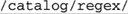

5.3. HTML-Related ExamplesIn Chapter 2, we saw an extended example that converted raw text to HTML (☞67), including regular expressions to pluck out email addresses and http URLs from the text. In this section, we'll do a few other HTML-related tasks. 5.3.1. Matching an HTML TagIt's common to see $html =~ s/<[^>]+>//g; However, it matches improperly if the tag has '>' within it, as with this perfectly valid HTML: <input name=dir value=">">. Although it's not common or recommended, HTML allows a raw '<' and '>' to appear within a quoted tag attribute. Our simple Allowed within the '<⋯>' are quoted sequences, and "other stuff" characters that may appear unquoted. This includes everything except '>' and quotes. HTML allows both single- and double-quoted strings. It doesn't allow embedded quotes to be escaped, which allows us to use simple regexes Putting these together with the "other stuff" regex
That may be a bit confusing, so how about the same thing shown with comments in a free-spacing mode:
< # Opening "<"
( # Any amount of ...
"[^"]*" # double-quoted string,
| # or ...
'[^']*' # single-quoted string,
| # or ...
[^'">] # "other stuff"
)* #
> # Closing ">"
The overall approach is quite elegant, as it treats each quoted part as a unit, and clearly indicates what is allowed at any point in the match. Nothing can be matched by more than one part of the regex, so there's no ambiguity, and hence no worry about unintended matches "sneaking in," as with some earlier examples. Notice that One thought about efficiency when used with an NFA engine: since we don't use the text captured by the parentheses, we can change them to non-capturing parentheses (☞137). And since there is indeed no ambiguity among the alternatives, if it turns out that the final 5.3.2. Matching an HTML LinkLet's say that now we want to match sets of URL and link text from a document, such as pulling the marked items from:
⋯<a href="Because the contents of an <A> tag can be fairly complex, I would approach this task in two parts. The first is to pluck out the "guts" of the <A> tag, along with the link text, and then pluck the URL itself from those <A> guts. A simplistic approach to the first part is a case-insensitive, dot-matches-all application of Once we have the <A> guts in a string, we can inspect them with a separate regex. In them, the URL is the value for the HRef=value attribute. HTML allows spaces on either side of the equal sign, and the value can be quoted or not, as described in the previous section. A solution is shown as part of this Perl snippet to report on links in the variable $Html:
# Note: the regex in the while(...) is overly simplisticsee text for
discussion
while ($Html =~ m{a\b([^>]+)>(.*?)</a>}ig)
{
my $Guts = $1; # Save results from the match above, to their own ...
my $Link = $2; # ... named variables, for clarity below.
if ($Guts =~ m{
\b HREF # "href" attribute
\s* = \s* # "=" may have whitespace on either side
(?: # Value is ...
"([^"]*)" # double-quoted string,
| # or ...
'([^']*)' # single-quoted string,
| # or ...
([^'">\s]+) # "other stuff"
) #
}xi)
{
my $Url = $+;
# Gives the
highest-numbered actually-filled $1, $2, etc.
print "$Url with link text: $Link\n";
}
}
Some notes about this:
Depending on the text, the actual URL may end up in $1, $2, or $3. The others will be empty or undefined. Perl happens to support a special variable $+ which is the value of the highest-numbered $1, $2, etc. that actually captured text. In this case, that's exactly what we want as our URL. Using $+ is convenient in Perl, but other languages offer other ways to isolate the captured URL. Normal programming constructs can always be used to inspect the captured groups, using the one that has a value. If supported, named capturing (☞138) is perfect for this, as shown in the VB.NET example on page 204. (It's good that .NET offers named capture, because its $+ is broken ☞424.) 5.3.3. Examining an HTTP URLNow that we've got a URL, let's see if it's an HTTP URL, and if so, pluck it apart into its hostname and path components. Since we know we have something intended to be a URL, our task is made much simpler than if we had to identify a URL from among random text. That much more difficult task is investigated a bit later in this chapter. So, given a URL, we merely need to be able to recognize the parts. The hostname is everything after Actually, a URL may have an optional port number between the hostname and the path, with a leading colon: Here's a Perl snippet to report about a URL:
if ($url =~ m{^http://([^/:]+)(:(\d+))?(/.*)?$}i)
{
my $host = $1;
my $port = $3 || 80; # Use $3 if it exists; otherwise default to 80.
my $path = $4 || "/"; # Use $4 if it exists; otherwise default to "/".
print "Host: $host\n";
print "Port: $port\n";
print "Path: $path\n";
} else {
print "Not an HTTP URL\n";
}
5.3.4. Validating a HostnameIn the previous example, we used Well, even though both are used to "match a hostname," they're used quite differently. It's one thing to pluck out something from a known quantity (e.g., from something you know to be a URL), but it's quite another to accurately and unambiguously pluck out that same type of something from among random text. Specifically, in the previous example, we made the assumption that what comes after the 'http://' is a hostname, so the use of Now, for a third angle on matching a hostname, we can consider validating
hostnames with regular expressions. In this case, we want to check whether a string is a well-formed, syntactically correct hostname. Officially, a hostname is made up of dot-separated parts, where each part can have ASCII letters, digits, and hyphens, but a part can't begin or end with a hyphen. Thus, one part can be matched with a case-insensitive application of
^
(?i) # apply this regex in a case-insensitive manner.
# One or more dot-separated parts ...
(?: [a-z0-9]\. | [a-z0-9][-a-z0-9]*[a-z0-9]\. )+
# Followed by the final suffix part ...
(?: com|edu|gov|int|mil|net|org|biz|info|name|museum|coop|aero|[a-z][a-z] )
$
Something matching this regex isn't necessarily valid quite yet, as there's a length limitation: individual parts may be no longer than 63 characters. That means that the There's one final change, just to be official. Officially, a name consisting of only one of the suffixes (e.g., 'com', 'edu', etc.) is also syntactically valid. Current practice seems to be that these "names" don't actually have a computer answer to them, but that doesn't always seem to be the case for the two-letter country suffixes. For example, Anguilla's top-level domain 'ai' has a web server: http://ai/ shows a page. A few others like this that I've seen include cc, co, dk, mm, ph, tj, tv, and tw. So, if you wish to allow for these special cases, change the central
^
(?i) # apply this regex in a case-insensitive manner.
# Zero or more dot-separated parts ...
(?: [a-z0-9]\. | [a-z0-9][-a-z0-9]{0,61}[a-z0-9]\. )*
# Followed by the final suffix part ...
(?: com|edu|gov|int|mil|net|org|biz|info|name|museum|coop|aero|[a-z][a-z] )
$
This now works fine to validate a string containing a hostname. Since this is the most specific of the three hostname-related regexes we've developed, you might think that if you remove the anchors, it could be better than the regex we came up with earlier for plucking out hostnames from random text. That's not the case. This regex matches any two-letter word, which is why the less-specific regex from Chapter 2 is better in practice. But, it still might not be good enough for some purposes, as the next section shows. 5.3.5. Plucking Out a URL in the Real WorldWorking for Yahoo! Finance for many years, I wrote programs to process incoming financial news and data feeds. News articles were usually provided in raw text, and my programs converted them to HTML for a pleasing presentation. (If you've read financial news at http://finance.yahoo.com in the last 10 years, you've had a chance to see how I did.) It was often a daunting task due to the random "formatting" (or lack thereof) of the data we received, and because it's much more difficult to recognize things like hostnames and URLs in raw text than it is to validate them once you've got them. The previous section alluded to this; in this section, I'll show you the code I actually used at Yahoo! to solve the issues we faced. The code looks for several types of URLs to pluck from the textmailto, http, https, and ftp URLs. If we find 'http://' in the text, it's clear that's the start of a URL, so we can use something simple like However, often, a URL is given without the http:// or mailto: prefix, such as:
⋯visit us at www.oreilly.com or mail to orders@oreilly.com.
In this case, we need to be much more careful. What I used at Yahoo! is quite similar to the regex from the previous section, but it differs in a few ways:
(?i: [a-z0-9] (?:[-a-z0-9]*[a-z0-9])? \. )+ # sub domains
# Now ending .com, etc. For these, we require lowercase
(?-i: com\b
| edu\b
| biz\b
| org\b
| gov\b
| in(?:t|fo)\b # .int or .info
| mil\b
| net\b
| name\b
| museum\b
| coop\b
| aero\b
| [a-z][a-z]\b # two-letter country codes
)
In this regex, Here's a framework for finding URLs in raw text, into which we can insert the subexpression to match a hostname:
\b
# Match the leading part (proto://hostname, or just hostname)
(
# ftp://, http://, or https:// leading part
(ftp|https?)://[-\w]+(\.\w[-\w]*)+
|
# or, try to find a hostname with our more specific sub-expression
full-hostname-regex
)
# Allow an optional port number
( : \d+ )?
# The rest of the URL is optional, and begins with / ...
(
/ path-part
)?
I haven't talked yet about the path part of the regex, which comes after the hostname (e.g., the underlined part of http://www.oreilly.com). The path part turns out to be the most difficult text to match properly, as it requires some guessing to do a good job. As discussed in Chapter 2, what often comes after a URL in the text is also allowed as part of a URL. For example, with
Read his comments at http://www.oreilly.com/ask_tim/index.html. He ...
we can look and realize that the period after 'index.html' is English punctuation and should not be considered part of the URL, yet the period within 'index.html' is part of the URL. Although it's easy for us humans to differentiate between the two, it's quite difficult for a program, so we've got to come up with some heuristics that get the job done as best we can. The approach taken with the Chapter 2 example is to use negative lookbehind to ensure that a URL can't end with sentence-ending punctuation characters. What I used at Yahoo! Finance was originally written before negative lookbehind was available, and so is more complex than the Chapter 2 approach, but in the end it has the same effect. It's shown in the listing on the next page. Regex to pluck a URL from financial news
\b
# Match the leading part (proto://hostname, or just hostname)
(
# ftp://, http://, or https:// leading part
(ftp|https?)://[-\w]+(\.\w[-\w]*)+
|
# or, try to find a hostname with our more specific sub-expression
(?i: [a-z0-9] (?:[-a-z0-9]*[a-z0-9])? \. )+ # sub domains
# Now ending .com, etc. For these, require lowercase
(?-i: com\b
| edu\b
| biz\b
| gov\b
| in(?:t|fo)\b # .int or .info
| mil\b
| net\b
| org\b
| [a-z][a-z]\b # two-letter country codes
)
)
# Allow an optional port number
( : \d+ )?
# The rest of the URL is optional, and begins with / ...
(
/
# The rest are heuristics for what seems to work well
[^.!,?;"'<>()\[\]{}\s\x7F-\xFF]*
(?:
[.!,?]+ [^.!,?;"'<>()\[\]{}\s\x7F-\xFF]+
)*
)?
The approach taken for the path part is different in a number of respects, and the comparison with the Chapter 2 example on page 75 should be interesting. In particular, the Java version of this regex in the sidebar below provides some insight as to how it was built. In practice, I doubt I'd actually write out a full monster like this, but instead I'd build up a "library" of regular expressions and use them as needed. A simple example of this is shown with the use of $HostnameRegex on page 76, and also in the sidebar below. |
 <[^>]+>
<[^>]+> used to match an HTML tag.
used to match an HTML tag. '
'